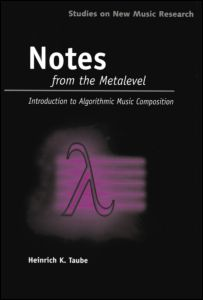

Composing at the metalevel
I've started reading "Notes from the Metalevel: An Introduction to Computer Composition" by Heinrich Taube, and realized I should have done that a long time ago!

About the book
Notes From the Metalevel is a practical introduction to computer composition. It is primarily intended for student composers interested in learning how computation can provide them with a new paradigm for musical composition.
I happened to have a PDF version of the book, but the good news is that there's an HTML version of it as well, which also includes all the MIDI files of the numerous examples in the book. So make sure you check that out if you're interested in computer-based composition. You might also be interested in this review in Computer Music Journal, and this course material from Taube's class at Illinois.
What is metalevel composition?
The preface to the first chapter contains this suggestive excerpt from Leonard Schlain's book, The Alphabet Versus the Goddess, which Taube (page 19-20) uses as a metaphor for what algorithmic composition (i.e., metalevel composition) is:
"The one crowded space in Father Perry's house was his bookshelves. I gradually came to understand that the marks on the pages were trapped words. Anyone could learn to decipher the symbols and turn the trapped words loose again into speech. The ink of the print trapped the thoughts; they could no more get away than a doomboo could get out of a pit. When the full realization of what this meant flooded over me, I experienced the same thrill and amazement as when I had my first glimpse of the bright lights of Konakry. I shivered with the intensity of my desire to learn to do this wondrous thing myself." (spoken by Prince Modupe, a west African prince who learned to read as an adult)
It is impossible to know exactly how Prince Modupe felt when he discovered a process by which his very thoughts could be trapped and released at will again into speech. But I think his epiphany must be close to what I experienced when, as a young composer, I was first shown how I could use a computer to represent my musical ideas and then "release them" into musical compositions. At that instant it became clear to me that there was an entire level of notation above the scores that I had been writing in my regular composition classes, a level I knew nothing about! But I could see that in this level it was possible to notate my compositional ideas in a precise manner and work with them in an almost physical way, as "trapped words" that could be unleashed into musical sound whenever I wanted.
So what does it mean to compose at the meta level?
Given the existence of the acoustic and score representations one might ask if there is yet another representation that constitutes a level of abstraction above the performance score? The answer, of course, is yes; it is what this book terms the metalevel. If the score represents the composition then the metalevel represents the composition of the composition. A metalevel representation of music is concerned with representing the activity, or process, of musical composition as opposed to its artifact, or score.
This book is about using the computer to instantiate this level: to define, model and represent the compositional processes, formalism and structures that are articulated in a musical score and acoustic performance but are not literally represented there. By using a computer the composer can work with an explicit metalevel notation, or language, that makes the metalevel as tangible as the performance and acoustic levels.